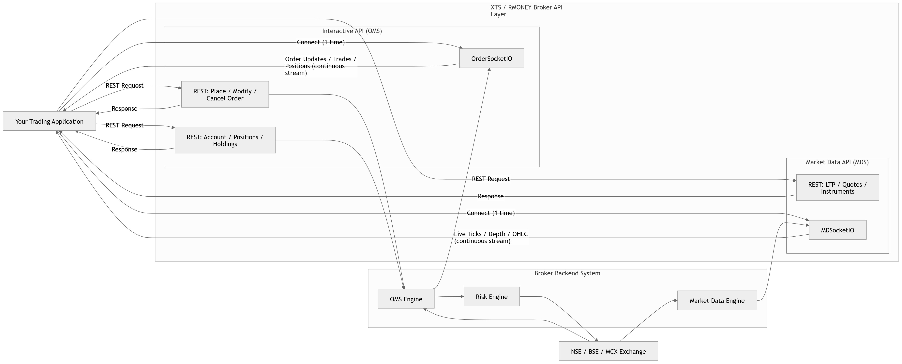
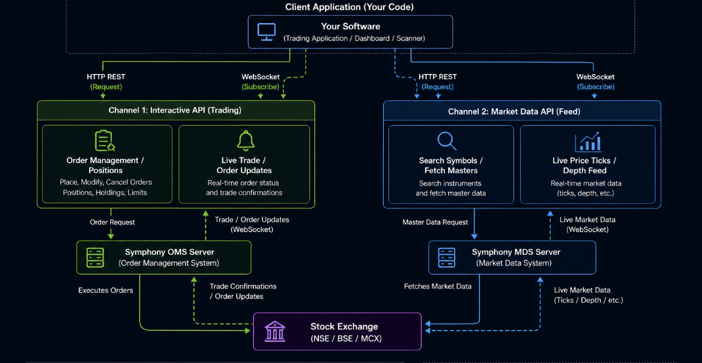
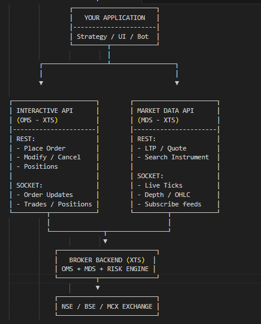
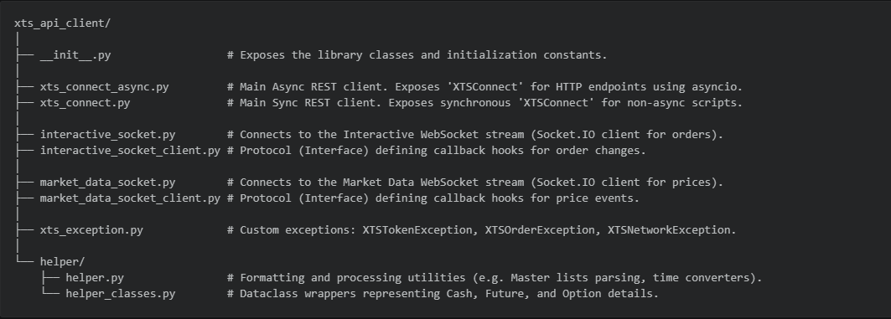
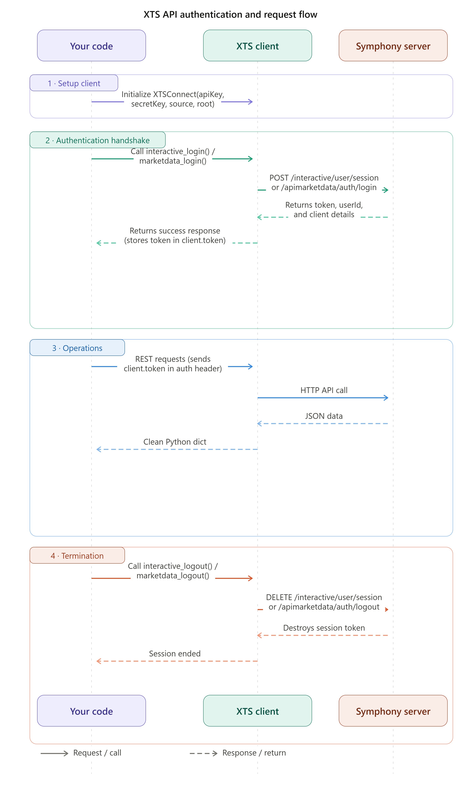
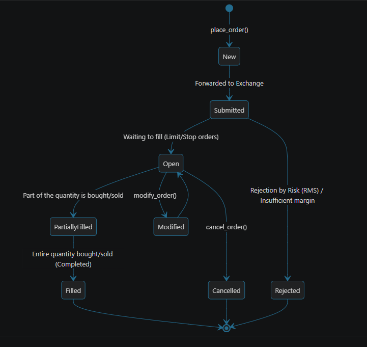
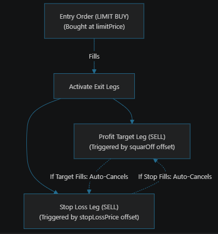
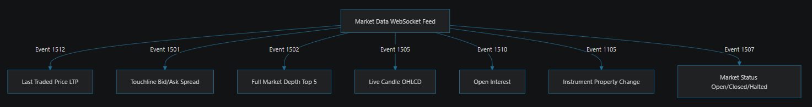

XTS API
XTS API (Xtreme Trading System API) is a complete trading framework that connects your application directly to brokers and stock exchanges — enabling market data, order management, portfolio services, and real-time updates.
What is XTS API?
XTS API acts as a bridge between your application and the stock exchange. It separates into two independent channels — Market Data (read-only feeds) and Interactive (two-way trading operations) — so network traffic never interferes with your orders.
API Request Flow
REST vs WebSocket
Welcome to RMoney APIs
About RMoney
RMoney is a technology-driven stock broking and investment platform that provides traders and investors with access to financial markets through modern trading applications, desktop platforms, and APIs.
RMoney enables users to trade across multiple market segments including Equity, Futures & Options (F&O), Currency, and Commodities. Along with manual trading, RMoney also provides API-based trading infrastructure that allows developers and traders to build custom applications, automate trading strategies, and access market data programmatically.
What are RMoney APIs?
RMoney APIs are a collection of developer interfaces that allow applications to communicate directly with the RMoney trading ecosystem. Instead of placing orders manually, developers can use APIs to perform actions automatically.
- Retrieve live market prices
- Access historical market data
- Place buy and sell orders
- Track positions and holdings
- Monitor portfolios
- Receive real-time market updates
- Build algorithmic trading systems
These APIs are based on the Symphony XTS framework and are designed for high-speed trading and market data access.
Why Use RMoney APIs?
RMoney APIs help developers and traders build powerful financial applications without needing to create trading infrastructure from scratch.
- Automated trading
- Real-time market access
- Fast order execution
- Portfolio management
- Custom trading dashboards
- Strategy automation
- Market analytics
- Trading bots
Whether you are building a simple stock tracker or a complete algorithmic trading platform, RMoney APIs provide the building blocks required for development.
API Categories
RMoney APIs are divided into different categories based on functionality.
Market Data APIs
Access live and historical market information for stocks, derivatives, and more. Commonly used in charting applications, watchlists, screeners, and analytics platforms.
- Get real-time stock prices
- Access historical data
- Retrieve OHLC candles
- View market depth
- Search instruments
- Receive tick-by-tick updates
Trading APIs
Place and manage orders directly through your application. The foundation of automated trading systems and trading platforms.
- Place orders
- Modify orders
- Cancel orders
- Check order status
- Track positions
- Manage portfolios
Portfolio APIs
Monitor investments and trading activity with detailed account information. Useful for portfolio management systems and investment dashboards.
- Holdings
- Positions
- Funds & margins
- Profit & Loss
- Account summary
WebSocket APIs
Receive real-time streaming data with persistent WebSocket connections. Ideal for low-latency trading applications.
- Live market ticks
- Real-time quotes
- Order updates
- Position updates
- Market depth updates
Supported Market Segments
RMoney APIs support multiple trading segments through a unified interface, allowing developers to manage different asset classes using a single API ecosystem.
Technology & Integration
RMoney APIs can be integrated with various technologies and programming languages, allowing developers to build applications using their preferred technology stack.
Who Can Use RMoney APIs?
RMoney APIs are designed for a wide range of users in the financial and technology space.
Traders
Automate strategies and execute trades faster than manual trading.
Developers
Build custom trading applications and financial tools.
FinTech Companies
Integrate market data and trading capabilities into products.
Researchers
Analyze historical data and develop quantitative models.
Algo Traders
Automate complete trading workflows using APIs.
Typical API Workflow
A typical RMoney API workflow covers the full cycle from login to real-time updates, powering most trading and investment applications.
Key Features
Getting Started
Follow these steps to start using RMoney APIs and build your first trading application.
Open an RMoney trading account.
Request API access from the RMoney team.
Generate your API credentials from the dashboard.
Authenticate your application using the Interactive API.
Start accessing market data and trading services.
Ready to Build?
Once authenticated, you can build trading applications, analytics platforms, investment tools, and automated trading systems using the RMoney API ecosystem.
Reference Manual
📘 The Complete Reference Manual: Symphony XTS API v2 & Python Client Library
Welcome! This is a comprehensive, standalone guide designed for new users and programmers to master the Symphony XTS Front-End API (v2.0) and its official Python client library, xts-api-client.
No prior experience with trading APIs is required. We explain everything from high-level architecture to low-level parameters, supplemented by visual diagrams and code examples.
1High-Level Concepts & Mental Models
What is XTS?
Symphony XTS is a high-speed trading system interface. It sits between your custom software (trading bot, dashboard, or scanner) and the stock brokers/exchanges (like NSE, BSE, MCX).
The Two-Channel Split (Dual Engine)
To prevent network traffic jams, XTS separates commands into two entirely independent channels:



- Interactive API : Private and secure. Used to place trades, check cash balances, query open positions, and get instant notifications when your orders fill.
- Market Data API : Public and read-only. Used to fetch stock names, request historical candle data, and stream real-time price updates (LTP, bid/ask spreads).
2Technical Vocabulary & Business Rules
Before writing code, you must understand the terminology used in API parameters:
A. Exchange Segments
Tells XTS which market segment you are querying:
- NSECM (1): National Stock Exchange Cash Market (Buying actual shares of Reliance, TCS, etc.)
- NSEFO (2):National Stock Exchange Futures & Options (Trading Nifty options/futures)
- NSECD (3): National Stock Exchange Currency Derivatives (USD/INR trading)
- MCXFO (51): Multi Commodity Exchange Futures & Options (Gold, Silver, Crude Oil)
- BSECM (11) & BSEFO (12): Bombay Stock Exchange equivalents
B. Product Types
Tells the broker how to manage the trade margin and holding period:
- MIS (Margin Intraday Square-off): Closed automatically before market shuts. Offers high leverage.
- NRML (Normal): Used to hold futures & options contracts for multiple days.
- CNC (Cash and Carry): Used to buy actual stock shares for long-term investing. No leverage.
C. Order Types
- MARKET: Buys/sells immediately at the best available current market price.
- LIMIT: Executes only at your specified price or better.
- STOPMARKET: Triggered when the market price hits a target trigger price, then executes as a Market order.
- STOPLIMIT: Triggered when the market price hits a target trigger price, then places a Limit order.
D. Time In Force (Validity)
- DAY: The order is valid until the market closes today.
- IOC (Immediate or Cancel): The order must execute instantly, or any unfilled part is cancelled.
- FOK (Fill or Kill): The entire order must execute instantly in full, or the whole order is cancelled.
3Library Architecture & File Structure
Here is a map of the xts-api-client package, detailing what each file does:

4REST API Reference: Authentication & Session
Every action requires a session token. Here is the lifecycle of an XTS session:

Authentication Endpoints
- Interactive Login:
POST /interactive/user/session - Interactive Logout:
DELETE /interactive/user/session - Market Data Login:
POST /apimarketdata/auth/login - Market Data Logout:
DELETE /apimarketdata/auth/logout
Python Authentication Code Example
import asyncio
from xts_api_client.xts_connect_async import XTSConnect
async def manage_session():
# 1. Initialize the clients
interactive_client = XTSConnect(
apiKey="your_interactive_key",
secretKey="your_interactive_secret",
source="WEBAPI",
root="https://api.yourbroker.com"
)
# 2. Login (This fetches and automatically saves the token to client.token)
login_resp = await interactive_client.interactive_login()
print("Interactive Logged In! Token:", interactive_client.token)
print("User ID:", interactive_client.userID)
# 3. Log out to clean up session
logout_resp = await interactive_client.interactive_logout()
print("Logged out successfully!")
asyncio.run(manage_session())
5Interactive API (Trading Operations)
The Interactive client manages your money, orders, and positions.
A. Order Placement & The Order Lifecycle
When you submit an order, it moves through a state machine inside the exchange:

B. Order Parameters Deep Dive
When calling place_order(), you must specify the following parameters:
response = await client.place_order(
exchangeSegment="NSECM", # "NSECM", "NSEFO", "MCXFO"
exchangeInstrumentID=2885, # Numeric code for the stock (e.g. 2885 for RELIANCE)
productType="MIS", # "MIS" (Intraday), "NRML" (F&O Carryover), "CNC" (Equity Delivery)
orderType="LIMIT", # "MARKET", "LIMIT", "STOPMARKET", "STOPLIMIT"
orderSide="BUY", # "BUY" or "SELL"
timeInForce="DAY", # "DAY", "IOC"
disclosedQuantity=0, # Quantity visible to public order book (0 hides nothing)
orderQuantity=10, # Total quantity to buy/sell
limitPrice=2450.50, # Price to execute (required if LIMIT or STOPLIMIT)
stopPrice=0.0, # Trigger price (required if STOPMARKET or STOPLIMIT)
orderUniqueIdentifier="my_bot_01" # Custom string tag to track this specific order
)
C. Advanced Order Types (Cover & Bracket)
1. Cover Orders (CO)
A Cover Order has a stop-loss order chained directly to it. It is highly leveraged and requires an entry transaction and a trigger price (the stop-loss activation level).
(Market or Limit)
(Active on Exchange)
(Market Order)
Cover Order Parameters & Code:
# Place a Cover Order: Buy Reliance at market, stop-loss trigger active at ₹2400
co_response = await client.place_cover_order(
exchangeSegment="NSECM",
exchangeInstrumentID=2885,
orderSide="BUY",
orderType="MARKET",
orderQuantity=5,
disclosedQuantity=0,
limitPrice=0.0, # 0.0 because orderType is MARKET
stopPrice=2400.0, # Stop Loss Trigger level
orderUniqueIdentifier="co_trade_01"
)
2. Bracket Orders (BO)
A Bracket Order surrounds your entry order with two bracket legs: a Take Profit Target and a Stop-Loss Protection. Both exit orders are sent to the exchange as a One-Cancels-the-Other (OCO) pair.

Bracket Order Parameters & Code:
# Place a Bracket Order: Buy Reliance at ₹2450. Sell at ₹2500 for profit (+50) or ₹2420 for loss (-30)
bo_response = await client.place_bracketorder(
exchangeSegment="NSECM",
exchangeInstrumentID=2885,
orderType="LIMIT",
orderSide="BUY",
disclosedQuantity=0,
orderQuantity=10,
limitPrice=2450.00,
squarOff=50.0, # Profit target offset (added to entry price)
stopLossPrice=30.0, # Stop-Loss protection offset (subtracted from entry price)
trailingStoploss=0.0, # 0.0 means inactive. Set value to adjust SL up as price rises
isProOrder=False, # Set True for proprietary trading accounts
orderUniqueIdentifier="bo_trade_01"
)
D. Spread & GTT Orders
1. Spread Orders
Spread orders let you trade price differences between two stock options or futures contracts simultaneously (e.g. buying July Futures and selling August Futures).
- Place Spread:
POST /interactive/orders/spread - Modify Spread:
PUT /interactive/orders/spread - Cancel Spread:
DELETE /interactive/orders/spread
2. GTT (Good-Till-Triggered) Orders
GTT orders remain active in the system for weeks or months until a target trigger price is hit. Once hit, it launches a standard order.
- Place GTT:
POST /interactive/orders/gtt - GTT Order Book:
GET /interactive/orders/gtt/orderbook - Cancel GTT:
DELETE /interactive/orders/gtt
E. Portfolio Management & Positions
Once you have active trades, you query your balances and positions:
async def query_portfolio(client):
# 1. Available margin and cash balance
balance = await client.get_balance()
available_cash = balance['result']['BalanceList'][0]['limitObject']['RMSSubLimits']['cashAvailable']
print(f"Available Cash: ₹{available_cash}")
# 2. Holdings (Long-term stocks held in your demat account)
holdings = await client.get_holding()
print("Holdings List:", holdings['result'])
# 3. Daywise positions (Today's trading activity)
day_pos = await client.get_position_daywise()
# 4. Netwise positions (Current active net open positions)
net_pos = await client.get_position_netwise()
for pos in net_pos['result']:
print(f"Instrument: {pos['ExchangeInstrumentID']} | Open Qty: {pos['NetQty']} | MTM PnL: ₹{pos['MTM']}")
# 5. Convert Position (e.g., convert Intraday 'MIS' to Delivery 'CNC')
await client.convert_position(
exchangeSegment="NSECM",
exchangeInstrumentID=2885,
targetQty=5,
isDayWise=True,
oldProductType="MIS",
newProductType="CNC"
)
F. Margin Calculator APIs
You can request how much cash margin is required to place or modify orders before actually sending them:
- Regular Margin:
POST /interactive/margin/regular - Cover Margin:
POST /interactive/margin/cover - Bracket Margin:
POST /interactive/margin/bracket
6Market Data API (Feeds & Queries)
The Market Data client fetches historical chart candles, instrument identifiers, and subscriptions.
async def query_market_data(market_client):
# 1. Search for a security by trading symbol
search_resp = await market_client.search_by_scriptname("TATAMOTORS")
instrument_id = search_resp['result'][0]['ExchangeInstrumentID']
print(f"TATA Motors Instrument ID: {instrument_id}")
# 2. Query Expiry Dates for Options/Futures contracts
expiries = await market_client.get_expiry_date(
exchangeSegment=2, # NSEFO
series="OPTIDX", # Index Option
symbol="NIFTY"
)
print("Nifty Option Expiries:", expiries['result'])
# 3. Retrieve Historical Chart Candles (OHLC)
candles = await market_client.get_ohlc(
exchangeSegment=1, # NSECM
exchangeInstrumentID=22, # NIFTY Index
startTime="Jun 01 2026 091500", # MMM DD YYYY HHMMSS
endTime="Jun 15 2026 153000",
compressionValue=5 # 5-minute intervals
)
print("Raw Candle Data:", candles['result']['dataReponse'][:200])
7Real-time Socket Streaming (WebSockets via Socket.IO)
WebSockets establish a constant, open channel of communication. Data flows automatically without your software having to ask for it.
Step 1: Connection URL Breakdown
The library connects to the socket using a specific query string:
- Interactive Socket:
{root_url}/?token={token}&userID={userID}&apiType=INTERACTIVE - Market Data Socket:
{root_url}/?token={token}&userID={userID}&publishFormat=JSON&broadcastMode=Full
Step 2: The Event Code Map
The Market Data socket streams message packets prefixed with numeric event codes:

Step 3: Complete WebSocket Listener Implementation
To catch these events, you subclass MarketDataSocketClient (for prices) or InteractiveSocketClient (for trading updates) and assign it to the socket managers:
import asyncio
from xts_api_client.xts_connect_async import XTSConnect
from xts_api_client.market_data_socket import MDSocket_io
from xts_api_client.market_data_socket_client import MarketDataSocketClient
# 1. Create your listener implementation
class RealTimePriceFeed(MarketDataSocketClient):
async def on_connect(self):
print(" Connected to live price feeds!")
async def on_disconnect(self):
print(" Socket disconnected!")
async def on_error(self, data):
print(" Error from Socket:", data)
# Event 1512: LTP Ticks
async def on_event_last_traded_price_full(self, data):
print(f"Price Tick -> ID: {data['ExchangeInstrumentID']} | Price: ₹{data['LastTradedPrice']}")
# Event 1501: Bid/Ask Depth Ticks
async def on_event_touchline_full(self, data):
print(f"Spread -> Bid: {data['BidInfo']['Price']} | Ask: {data['AskInfo']['Price']}")
# 2. Main initialization script
async def stream_prices():
# Login HTTP first
client = XTSConnect(
apiKey="your_market_key",
secretKey="your_market_secret",
source="WEBAPI",
root="https://api.yourbroker.com"
)
await client.marketdata_login()
# Assign socket listener
listener = RealTimePriceFeed()
socket_client = MDSocket_io(
token=client.token,
userID=client.userID,
root_url=client.root,
marketdatasocketclient=listener
)
# Establish connection
await socket_client.connect()
# Subscribe to Reliance (2885) and Nifty (22)
instruments = [
{"exchangeSegment": 1, "exchangeInstrumentID": 2885},
{"exchangeSegment": 1, "exchangeInstrumentID": 22}
]
await client.send_subscription(Instruments=instruments, xtsMessageCode=1512)
# Keep the program running to see ticks stream
await asyncio.sleep(20)
# Clean up
await socket_client.disconnect()
await client.marketdata_logout()
if __name__ == "__main__":
asyncio.run(stream_prices())
8Mark-To-Market (MTM) PnL Calculations
Symphony calculates your unrealized profit or loss (PnL) in real-time. Here is how the math works:
Realized PnL
Realized PnL is locked in when you complete a trade loop (Buy and Sell the same contract).
Unrealized PnL
Unrealized PnL fluctuates as the market price moves. It is calculated on open positions:
- For Long Positions (Open Quantity > 0):
Unrealized PnL = (Current LTP − Average Buy Price) × Open Quantity
- For Short Positions (Open Quantity < 0):
Unrealized PnL = (Average Sell Price − Current LTP) × Open Quantity (Absolute)
9Helper Library Utilities
The client library includes xts_api_client.helper.helper to parse and manage incoming data structures automatically.
1. Master List Parser (Pandas DataFrame)
Symphony sends large stock master files as pipeline-separated string streams. The helper converts them to clean Pandas dataframes:
from xts_api_client.helper.helper import cm_master_string_to_df, fo_master_string_to_df
# Assume 'raw_csv_response' is retrieved from get_master() call
df_equities = cm_master_string_to_df(raw_csv_response)
# You can now run pandas queries
print(df_equities[df_equities['Name'] == 'RELIANCE'])
2. MS-DOS Time Zone Converter
Exchange times are given as seconds elapsed since the MS-DOS Epoch (1980-01-01). The helper translates this to standard Unix nanoseconds:
from xts_api_client.helper.helper import dostime_secomds_to_unixtime
unix_nanoseconds = dostime_secomds_to_unixtime(1464972900)
print("Standard Unix timestamp:", unix_nanoseconds)
3. Account-Wide Squareoff Helper
The helper provides a routine to retrieve all your open positions and instantly exit them at market price to protect capital in emergencies:
from xts_api_client.helper.helper import async_squareoff_all_positions_
# Retrieve all positions and close them out
sq_off_ids = await async_squareoff_all_positions_(interactive_client)
print("Emergency Squared off Order IDs:", sq_off_ids)
10Robust Code Design: Reconnections & Retries
To deploy algorithms safely, you must handle network disconnects or API timeouts. Here is a production-grade template for a Gateway wrapper that you can copy to build your systems:
import asyncio
import logging
from xts_api_client.xts_connect_async import XTSConnect
from xts_api_client.interactive_socket import OrderSocket_io
from xts_api_client.interactive_socket_client import InteractiveSocketClient
from httpx import PoolTimeout, ConnectTimeout, ReadTimeout
class OrderCallbackHandler(InteractiveSocketClient):
def __init__(self, gateway):
self.gateway = gateway
async def on_connect(self):
self.gateway.connected = True
logging.info("WebSocket connected!")
async def on_disconnect(self):
self.gateway.connected = False
logging.warning("WebSocket lost! Reconnecting...")
asyncio.create_task(self.gateway.reconnect())
class XTSGateway:
def __init__(self, api_url, key, secret):
self.api_url = api_url
self.key = key
self.secret = secret
self.client = None
self.socket = None
self.connected = False
async def connect(self):
# 1. Login REST API
self.client = XTSConnect(self.key, self.secret, "WEBAPI", self.api_url)
await self.client.interactive_login()
# 2. Start WebSocket Connection
self.socket = OrderSocket_io(
token=self.client.token,
userID=self.client.userID,
root_url=self.client.root,
reconnection=True,
interactiveSocketClient=OrderCallbackHandler(self)
)
await self.socket.connect()
async def place_order_safe(self, params: dict, retries=4):
"""Places orders with auto-retry on HTTP timeouts"""
for attempt in range(retries):
try:
response = await self.client.place_order(**params)
return response
except (PoolTimeout, ConnectTimeout, ReadTimeout) as timeout_exc:
logging.warning(f"Timeout on attempt {attempt+1}/{retries}. Retrying...")
await asyncio.sleep(0.5)
raise RuntimeError("Failed to place order: Connection Timed Out")